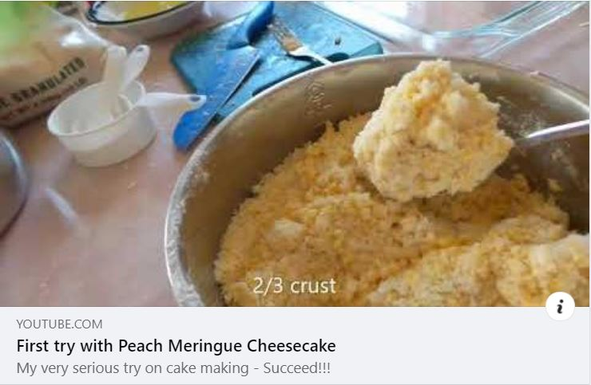

Home, WA
Finally finished - my first YouTube video
It’s about my first cheese cake making experience.
Last week is my daughter’s birthday. I decided to make a cake instead of getting one like what we did in the past.
On that day, I took one day off. I started making cake at 10AM and finished at 4PM. 6 hours and 26 minutes!!!
The cake turned out pretty good. We all like it.
Here’s the link:

×